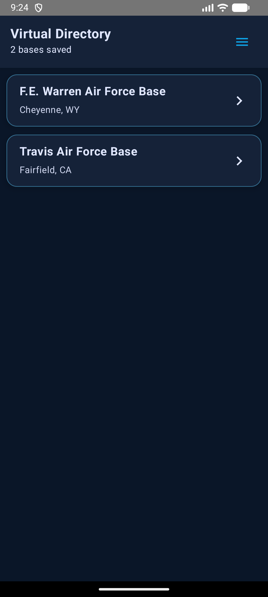
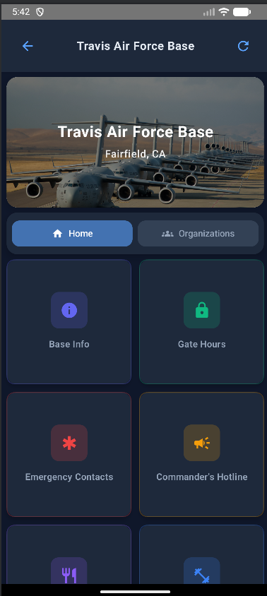
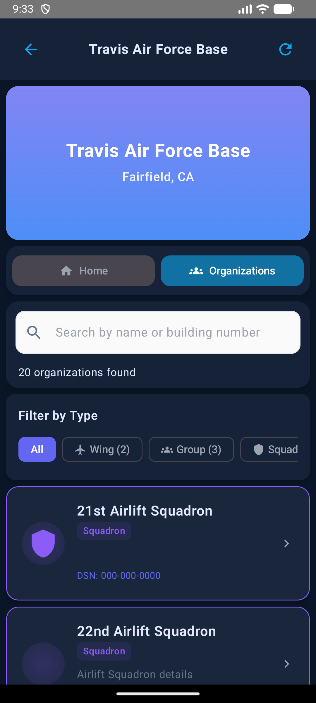

Virtual Directory
Android app · Travis Air Force Base
Kotlin
Jetpack Compose
Supabase
A mobile directory for military installations. Users pick a base, browse its organizations by type with search and filters, and save bases for quick access. The home screen puts key information in tiles, such as base info, gate hours, emergency contacts, and the commander's hotline. Data is cached for offline use, and the interface has a dark theme.
This app was designed to replace AF Connect, which was slated to be discontinued. As a previous dorm resident and an ill-informed airman, I decided to make a user-friendly app with extra functionality a top priority, like searching for a building number to see which building it's assigned to.
View repository →

